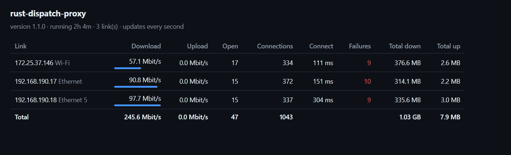

Use all your internet connections at once
Ethernet, Wi-Fi and a tethered phone, working together. rust-dispatch-proxy spreads your downloads across every connection you have, so you get their combined speed. Free for personal use.
One file, no installer · Windows 10 & 11 (x64 and ARM) · Linux command-line version

Everything handled for you
Double-click and it works. Behind the scenes it keeps every connection busy and steps around the ones having trouble.
Finds your connections
Uses every adapter that can reach the internet, and adapts when Wi-Fi drops or a cable is plugged in, without interrupting your downloads.
One-click control panel
Start, stop and see each connection's live speed. Settings in one place, and an option to start when you log in.
Nothing to configure
Switches the Windows proxy setting on while it runs and off when it stops, so browsers and other apps just use it.
Fast failover
If a connection is slow to respond, the next one is tried alongside it within a fraction of a second. The first to connect wins.
Your traffic, your lines
Not a VPN: everything goes straight out of your own connections. No accounts, no servers in between, no tracking.
Light and fast
Written in Rust. The proxy uses a few MB of memory and can move many gigabits per second, far more than home connections need.
How it works
Windows normally sends everything over a single connection. rust-dispatch-proxy runs on your PC as a local proxy and sends each new connection out over whichever of your links is least busy.
- Connect your internet connections: for example Ethernet plus Wi-Fi, or a phone over USB.
- Download
proxy-gui.exeand double-click it. It finds your connections and turns on the Windows proxy setting. - Download as usual. Apps that open several connections, like download managers, torrent clients and browsers, now use all your links together.
Who it's for
| Works great for | Doesn't speed up |
|---|---|
| Download managers (Internet Download Manager and similar) | A single-stream download (one connection stays on one link) |
| Torrent clients set to use a SOCKS5 proxy | A single video call or game connection |
| Browsers loading many pages and files, cloud sync, game launchers | Sites that need one fixed IP address, like some banking sites (use those without the proxy) |
Questions
Can I use two internet connections at the same time on Windows?
Yes. Windows normally uses one connection at a time. rust-dispatch-proxy spreads your connections across every network adapter that can reach the internet, such as Ethernet, Wi-Fi and a USB-tethered phone, so they're used together.
Will a single download get faster?
Only if the download uses several connections. Each connection goes over one link, so download managers, torrent clients and browsers loading many files benefit the most. A single-stream download stays on one link.
Is it free?
Yes, free for personal and other non-commercial use under the PolyForm Noncommercial License 1.0.0. For commercial use, contact the author on GitHub.
Do I need to install anything?
No. Download one file, proxy-gui.exe, and double-click it. Windows may show a "protected your PC" warning the first time because the app isn't code-signed yet: choose More info → Run anyway.
Is it a VPN?
No. It runs only on your PC and sends traffic straight out of your own connections. Nothing passes through anyone else's server.
Does it work on Linux?
Yes, as a command-line proxy (rust-dispatch-proxy -auto). The control panel is Windows-only.
Try it now
Get proxy-gui for Windows (x64, or aarch64 for ARM laptops) from the latest release.